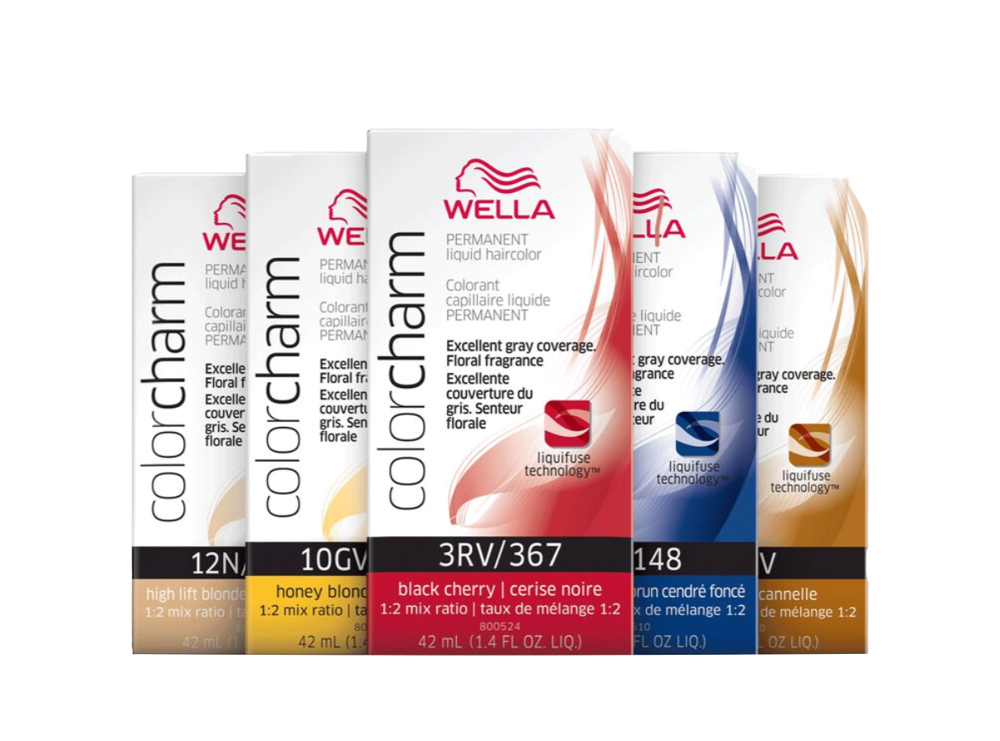

+

Gray hair acts almost like coarse hair, and therefore needs stronger processes to be covered. Permanent colors are an option, as well as a few special formulated rinses and semi permanent colors.
Hair Color
home